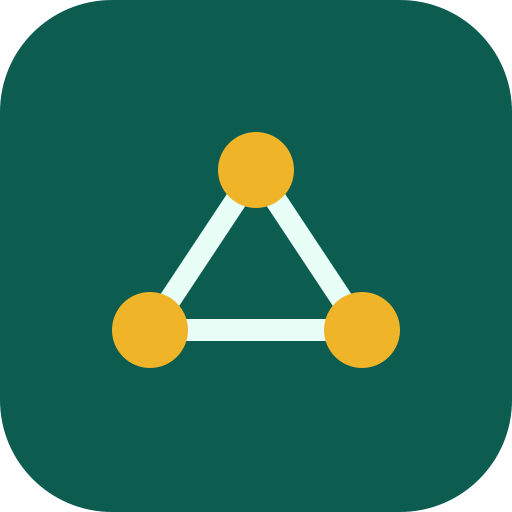

وَصْل
رسائل ومكالمات صوت وفيديو وملفات من هاتف إلى هاتف، بلا إنترنت ولا شريحة ولا أبراج. يعمل عبر Bluetooth و Wi-Fi Direct ونقطة الاتصال، ويمتد عبر LoRa وراديو HF.
امسح لفتح المنصة على هاتفك
افتح المنصة أو ثبّت التطبيق مرة واحدة وأنت متصل بالإنترنت. بعدها يعمل بالكامل دون إنترنت.
Android (الأفضل)
- اضغط «تحميل تطبيق Android» من الهاتف.
- افتح الملف wasl-android.apk، واسمح بالتثبيت من هذا المصدر إن طُلب.
- افتح التطبيق وامنح إذن «الأجهزة القريبة».
يتصل تلقائياً بالهواتف القريبة عبر Bluetooth و Wi-Fi Direct دون رمز، ويعمل حلقة وصل مع قفل الشاشة.
iPhone و iPad
- افتح «افتح المنصة على الويب» في متصفح Safari.
- اضغط زر المشاركة ثم «إضافة إلى الشاشة الرئيسية».
- افتحه من الأيقونة. يتصل بالأجهزة القريبة عبر نقطة اتصال مشتركة ورمز QR.
تطبيق iOS الأصلي (اتصال بلوتوث تلقائي) جاهز للبناء ويحتاج حساب Apple Developer للنشر عبر TestFlight.
الحاسوب
- افتح المنصة في Chrome أو Edge، ثم «تثبيت التطبيق» من شريط العنوان.
- لربط جهاز LoRa أو راديو HF: وصّله عبر USB ثم من تبويب «الشبكة».
- نسخة كاملة للاستخدام دون استضافة: wasl-web.zip
ما الذي يقدّمه
محادثات ومجموعاتنص وصور وملفات ورسائل صوتية، مشفّرة من طرف إلى طرف
مكالمات صوت وفيديوبين هاتفين على نفس الشبكة المحلية
نداء استغاثة SOSموقّع، يصل لكل من في المدى، مع موقع GPS وصافرة ووميض مورس
تمرير متعدد القفزاتكل هاتف حلقة وصل، والرسائل تُحفظ وتُسلَّم عند الاقتراب
مركز قيادةصحة الشبكة، إذاعات بتأكيد استلام، قرارات بتوقيع متعدد، مؤقّت أمان
سجل متسلسلبصمات موقّعة غير قابلة للتلاعب، وتوثيق المستندات
LoRa و HF و VHFنصوص وطوارئ لمسافات من كيلومترات إلى آلاف الكيلومترات
بلا هوية شخصيةلا رقم هاتف ولا بريد ولا خادم